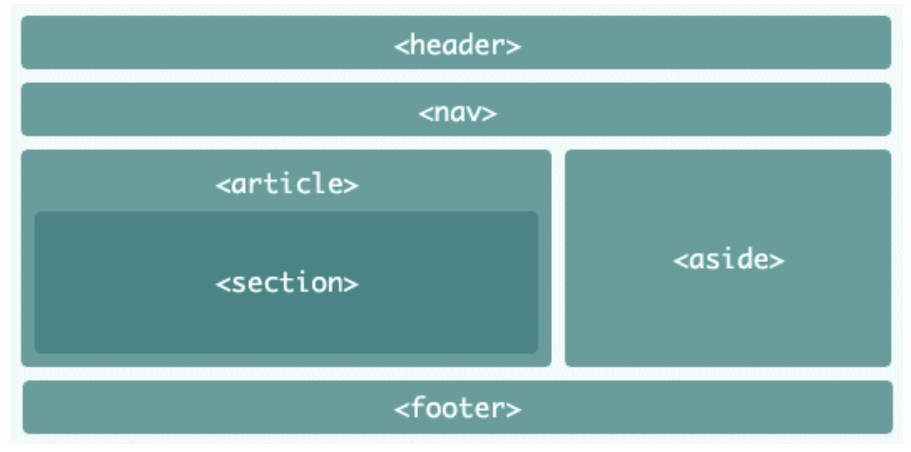

A ideia desta página é elaborar um website utilizando uma estrutura básica de HTML com tags que foram aprendidas durante as aulas práticas.
A principal ferramenta para se desenvolver uma página web é um o editor de texto. Pode ser usado o Sublime, um editor de notas, Notepad++. No curso Introdução ao HTML na Prática - Dio foi escolhido o Visual estudio Code.
Todo navegador web inclui um conjunto de ferramentas para ser usada por desenvolvedores. Com elas é possível inspecionar o HTML, o CSS e os codigos em JavaScript que forem carregados. No navegador Chrome o atalho de acesso para essa ferramenta é F12.
“Tag” em inglês significa etiqueta e em um arquivo HTML, elas são usadas para etiquetar as informações e estruturar o arquivo. Aparti do agrupamento das informações é possível classificar os tópicos do site e define o que será mostrado de forma temática e organizada.
Exixtem atributos no HTML que são globais e usados por todas as tags, como class, id, lang, style e outros que são específicos para algumas tags como src, disabled, href, label, etc…
Um arquivo HTML válido deve seguir a estrutura composta pelas tags html, head e body e a instrução !DOCTYPE. 
As principais tags para titulos são as já pré-formatadas nos navegadores que são: h1, h2, h3, h4, h5 e h6. Abaixo segue a lista com demais tag's para textos.
A tag que tem a função de formatar um bloco de texto como parágrafo é a tag p .
A tag que tem a função de formatar um bloco de texto como negrito é a tag strong ou b .
A tag que tem a função de formatar um bloco de texto como itálico é a tag i.
A tag que tem a função de formatar um bloco de texto como sublinhado é a tag u.
A tag que tem a função de formatar um bloco de texto como em subscrito é a tag sub.
A tag que tem a função de formatar um bloco de texto como em subrescrito é a tag sup.
A tag que tem a função de marcar um bloco de texto com a cor de fundo amarela é a tag mark.
A tag que tem a função de formatar um bloco de texto como emenor tamanho é a tag small.
O HTML tem duas tag's para que possamos fazer uso de listas. exite a lista não ordenada definida pela tag ul(unordered list) e a lista ordenada definida pela tag ol. Para cada tipo de lista é necessário que se tenha os itens dentro da tag li.
Os links no HTML possuem a função de inserir hiperlinks nos elementos da página através da tag a. Todo link possue o atributo href="" que redirecionar para outra página, de três formas diferentes:
O atributo target informa para o navegador como redirecionar a abertura da página, na mesma aba ou em uma
nova.
O atributo target pode ser do tipo: